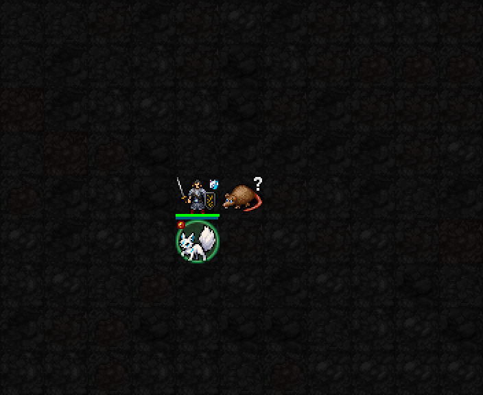

기존 승인 이펙트
3성 — 여우 바꿔치기 [액티브]

5성 — 백여우 행렬 [액티브]

신앙50 해금 / 최소 기도술 없음 / 추가MP·신앙·행동 비용 없음. 기만당한 살아 있는 적에게 플레이어가 무기·투척·직접 공격 주문을 처음 적중시키면, 그 적을 속인 분신 하나가 기존 협공에 더해 여우불1발을 추가 발사합니다.
기만 성공1회당 한 번. 빗나가면 기회 유지. 추가 여우불 자체의 빗나감은 재발사하지 않습니다. 피해가AC 등으로0이어도 직접 공격이 적중했다면 발동합니다. 플레이어 공격이나 기존 협공으로 적이 먼저 죽으면 취소합니다. 분신 사망·기만 만료·시야/사선/거리 조건 불충족 시 추가 발사는 없습니다.
기존 여우불 명중20+기도술, 피해1d(6+floor(기도술/3)), 화염 절반·영적 물리 절반 및 방어 처리, min(공격소요aut,10)/10 시간 보정 그대로입니다. 기도술12·1턴 공격이면 추가 발사 명중 시 평균5.5, 방어 적용 전. 5성에서4분신이어도 추가는1발뿐입니다.
권능·지속 피해·소환수·무턴 행동은 발동 대상이 아닙니다. 새 기만 성공 시 다시1회 가능. 추가 발사 사용 여부는 기존 저장 필드로 보존됩니다.

실제로 분신을 소환해 기만에 성공시킨 뒤 일반 공격 주문bolt를 적중시켜 추가 여우불과 실제 피해 증가를 검사했습니다. 높은 적HP·고정 위치를 사용한 검사장입니다. 별도의 새 이펙트나 투사체 애니메이션을 추가한 변경은 아닙니다.
신앙49/50, 실제 기만·일반 주문 적중·추가 피해, 두 번째 적중 중복 방지, 실제 빗나감 후 기회 유지, 근접/원거리/주문 적중 경로, 빠른 공격·무턴 행동, 만료·죽은 분신·거리 제외,4분신 중 추가1회, 새 기만 재충전, 미사용·사용 상태 각각 새프로세스 저장복원 후 동일 공격·피해·상태·난수 일치,22신 회귀와 기존 저장복원 검사 통과.
3성 — 여우 바꿔치기 [액티브]
5성 — 백여우 행렬 [액티브]